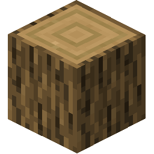
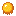
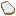

Пчеловодство
Пчеловодство
Пчёлы — это дикие насекомые, которых можно разводить как скот. Они ценятся за способность производить мёд, пчелиный воск и другие продукты. Всем пчёлам нужно жить в каком-либо гнезде. Этот раздел научит вас всему, что нужно знать для ухода и содержания пчёл.
Дикий улей

Дикие ульи появляются в лесах при температуре 5–30 °C и уровне грунтовых вод 150–450 мм.
Bees, in general, are active above 7°C, though hardier species tolerate colder temperatures. A Wild Beehive will always contain bees upon world generation, and will not lose the bees unless disturbed. If time has passed and the bees are active, the wild beehive will show that it is dripping with honey.
Разрушение дикого улья или дерева, к которому он прикреплён, всегда заставит пчёл атаковать близлежащих игроков. Это проявляется в виде эффекта Роя. Эффект пчелиного роя можно смягчить, надев полный комплект пчелиной брони или уйдя под воду. Дикие ульи дропают Мёд, Пчелиный воск и полезный предмет Дикие соты.


Плетёный улей — это самый маленький искусственный улей.
Самая полезная особенность плетёного улья — его можно поднять и переместить. Однако игрок может нести только один улей за раз, не становясь перегруженным. Если дикий улей в радиусе 15 блоков активен, в течение дня он должен начать рой. Рой обозначается линией частиц между двумя ульями.
Когда роение завершится, плетёный улей будет содержать Матку. Держа мотыгу и глядя на улей, вы увидите эту информацию. Матка представляет существование пчелиной колонии, и у неё есть ряд параметров: возраст, вид, черты, а также любые заболевания или инфекции колонии.
Сами по себе плетёные ульи лишь умеренно полезны для содержания пчёл. Это потому, что они могут содержать только 1 единицу мёда за раз. Сырой мёд можно добавить или удалить из улья с помощью ПКМ. Обратите внимание: чтобы не злить пчёл, собирайте урожай только когда на улице темно.


Деревянные ульи — это основное устройство для пчеловодства. Они содержат до четырёх рамок. В рамке может находиться 1 единица сырого мёда. Чтобы переместить пчёл в деревянный улей, поместите ваш плетёный улей с маткой внутри в радиусе 5 блоков от него и убедитесь, что в улье есть хотя бы одна рамка и достаточно тепло. Рой последует вскоре после этого и продлится день.
Ульи «знают» о квадратном радиусе в 5 блоков вокруг себя. Для производства мёда в этом радиусе должно быть не менее 10 цветов. Шанс производства мёда растёт с количеством цветов, максимум — 60. Черты пчёл также влияют на шанс производства мёда. Мёд можно откладывать только в пустую рамку улья.


Соскабливание рамки улья (также работает правый клик по предмету ножом) даёт Пчелиный воск.

Центрифуга используется для переработки соскобленных рамок улья в сырой мёд.
Центрифуга может управляться через ПКМ или через механическую энергию от оси над блоком. ПКМ, чтобы поместить соскобленные рамки улья внутрь. Сырой мёд появится снаружи центрифуги по завершении. Оставшиеся рамки можно повторно использовать в улье.


Пчёлы производят мёд не только для вас, но и для выживания! Когда у пчёл нет доступных рамок или слишком холодно (смотрите подсказку мотыги), они будут потреблять мёд каждые 12 дней по умолчанию. Когда мёд заканчивается, у них каждый день есть шанс погибнуть.
Рамки улья с сахаром, а также вручную заполненные заполненные рамки улья можно вручную добавлять в ульи, чтобы помочь пчёлам пережить зиму. Поэтому плетёным ульям трудно выживать зимой — они могут содержать только одну единицу мёда и не имеют рамок.


Добавление изолирующей рамки улья добавляет 2 °С дополнительной устойчивости к температуре. Добавление нескольких не даёт дополнительного эффекта.
Колонии всё ещё могут роиться из деревянных ульев. Полезный тип роения включает разделение улья. Улей, которому не менее 24 дней (по умолчанию), тёплый, полный мёда и свободный от генетических заболеваний, может разделиться на две новые колонии, если рядом доступен другой улей. Это также приводит к генетической мутации.
Роение также может быть вызвано нехваткой пищи в улье. Если улей видит другой улей с мёдом, а у самого его нет, он в некоторых случаях попытается роиться к тому улью. Пчёлы, заражённые паразитом Варроа, также будут пытаться вторгаться в другие ульи, захватывая их.
Если диких пчёл нет, пчёл также можно привлечь к плетёным ульям с помощью приманки для пчёл. Это дикие соты и ароматические соты. Добавьте их в плетёный улей с помощью ПКМ и окружите его не менее чем 30 цветами. В этом случае есть шанс 1/8 в день привлечь пчелу.
Ароматические соты — это альтернатива диким сотам, изготавливаемая из трав.
Мёд хранится вечно, если хранить его в банке.
Эта глава охватила основные аспекты пчеловодства. Информацию о видах, чертах, генетических заболеваниях и паразитарных инфекциях см. в следующей главе: Справочник по пчеловодству.